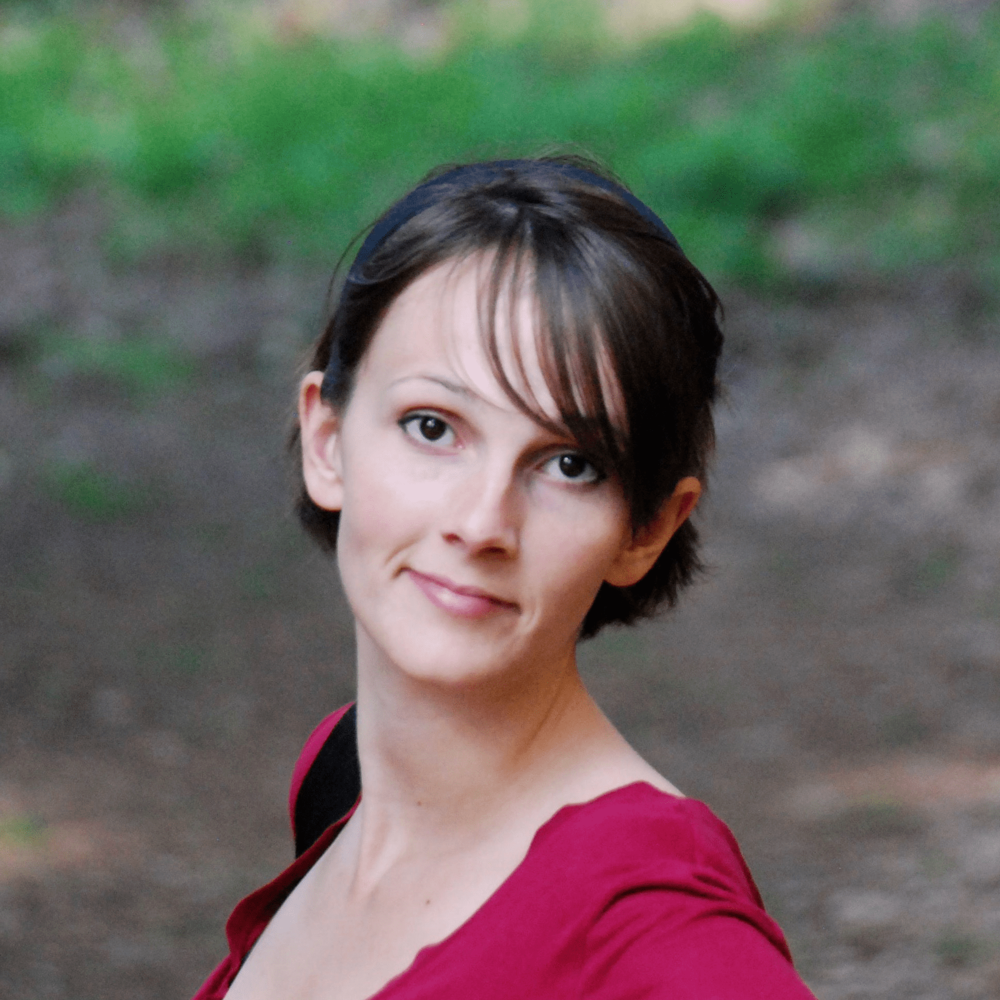

The BNP-ISBA board members
Maria De Iorio. Section Chair 2022.

Maria is a Professor of Science at Yale-NUS College and Professor of Biostatistics in the Department of Statistical Science at University College London. Her research is mainly focused on Bayesian statistics and how to apply Bayesian methods to analyse data, Bayesian Nonparametrics, Biostatistics, Medical Statistics, Genomics, Metabonomics. For more information, visit her website.
Alejandro Jara. Section Chair-Elect 2022.

Alejandro is a Associate Professor of Statistics at the Department of Statistics, Pontifical Catholic University of Chile. His main research interest lies in nonparametric Bayesian statistics, Markov Chain Monte Carlo methods, and statistical computing. For more information, visit his website.
Subhashis Ghoshal. Past Chair 2022.

Subhashis is a Distinguished Professor at the Department of Statistics, North Carolina State University, Raleigh, U.S.A. His current research interests include Bayesian nonparametrics, high-dimensional and graphical models, asymptotic statistics, differential equation models, image processing, functional data analysis et cetera. For more information, visit his website.
Jim Griffin. Program Chair 2022-2023.
Jim is a Professor in the Department of Statistical Science at University College London, London, United Kingdom . His research interests lie Bayesian nonparametric methods, regression modelling with high-dimensional data, time series modelling in econometrics and finance. For more information, visit his website.
Marta Catalano. Treasurer 2022-2023.
Marta is a Harrison Early Career Assistant Professor in the Department of Statistics at the University of Warwick. Her research mainly focuses on Bayesian nonparametrics, statistical optimal transport and random measures. For more information, visit her website.
Andrés Raffaele Argiento. Secretary 2021-2022.

Raffaele is Full professor in the Department Economics at Università degli studi di Bergamo (Italy). His research focuses on developing and studying methodological procedures in statistical science that incorporate flexible Bayesian modeling and approaches for data privacy with special interest in regression density estimation, hypothesis testing, probabilistic methods for complex data, and differentially private procedures. For more information, visit his website.
Past BNP-ISBA board members
|
Section Chair: 2021 - Subhashis Ghosal 2020 - Fernando Quintana 2019 - Igor Pruenster 2018 - Peter Mueller 2017 - Wes Johnson 2015/2016 - Antonio Lijoi 2013/2014 - Steve MacEachern 2010/2012 - Stephen Walker |
Program Chair: 2020/2021 - Alessandra Guglielmi 2018/2019 - Maria de Iorio 2016/2017 - Fernando Quintana 2014/2015 - Alejandro Jara 2012/2013 - Michele Guindani 2010/2011 - Ramsés Mena |
Secretary: 2019/2020 - Sara Wade 2017/2018 - Long Nguyen 2015/2016 - Li Ma 2013/2014 - Surya Tokdar 2010/2012 - Theodoros Nicoleris |
Treasurer 2020/2021 - Fabrizio Leisen 2018/2019 - Mingyuan Zhou 2016/2017 - Juhee Lee 2014/2015 - Alessandra Guglielmi 2012/2013 - Athanasios Kottas 2010/2011 - Maria Kalli |